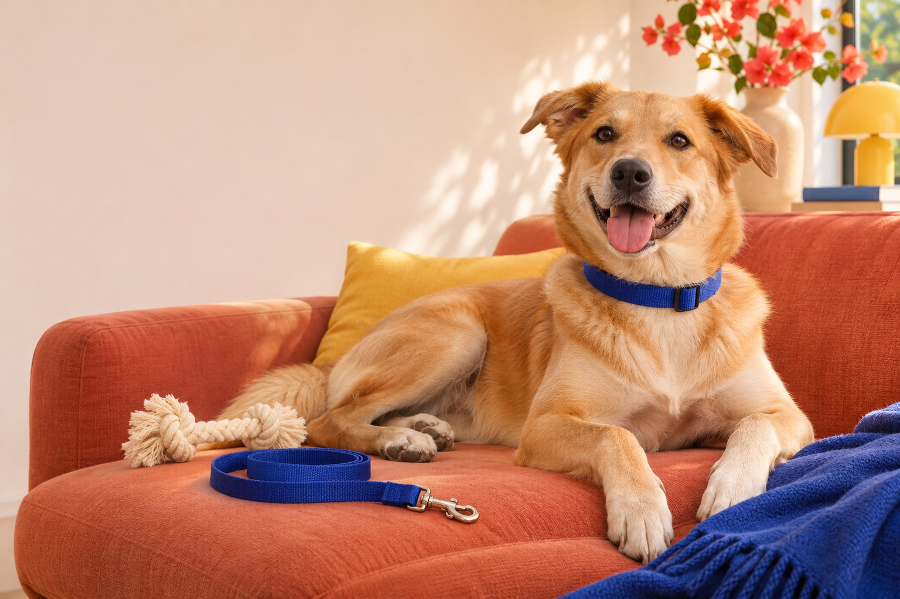

先给品牌性格
大胆的蓝色标题和放松的狗狗照片，在商品列表出现之前建立品牌识别。
把和宠物一起度过的好日子，放到页面第一眼。
明快的颜色、生活感照片和一个容易浏览的小系列，让品牌从普通商品分类中跳出来。

宠物用品如果只按品类排列，很容易看起来大同小异。Wagmorrow 先呈现人与宠物一起生活的感觉，再让商品浏览保持简单。
大胆的蓝色标题和放松的狗狗照片，在商品列表出现之前建立品牌识别。
食盆、项圈、牵引绳和睡垫四类商品，构成可以快速看懂的小目录。
商品速览、加入购物袋和数量调整，让访客留在页面里走完一段购买路径。
商品图片保持温暖的生活感，界面则用更有力量的颜色和直接的行动文案。